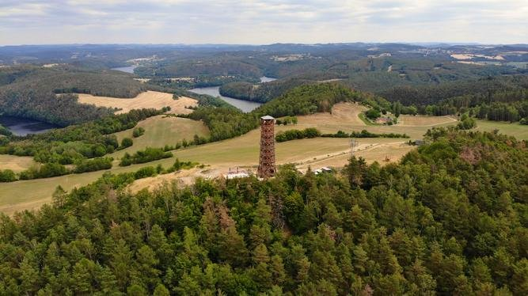

Rozhledna Milada

Něco o rozhledně
Rozhledna má devět pater a jméno získala po mamince Radomila Kessla, který je autorem a provozovatelem věže. Téměř 30 m vysoká věž stojí v místech, kde v minulém století stávaly dřevěné rampy pro rogalisty, a kde se také tyčí ocelový stožár patřící Ministerstvu vnitra.
Při dobré viditelnosti i na Šumavu. Rozhledna je postavena na krásném místě nad podkovou řeky Vltavy, na jejím pravém břehu, hned pod Orlickou přehradou.
Cesta
Na rozhlednu dojedete z obce Přední Chlum, která se rozkládá na vysokém kopci nad Orlíkem. Po přejezdu hráze vystoupáte prudký kopec ve směru na Milešov a po dvou kilometrech zatočíte doleva. Úzká asfaltová silnice vás nejprve mírným, později příkrým stoupáním dovede po 2 200 metrech až do malé osady. Za posledními chalupami těsně před parkovištěm odbočte kolem hradby doleva a po kamenité vozové cestě se strmým stoupáním pěšky dostanete až k rozhledně (cca 300 metrů).